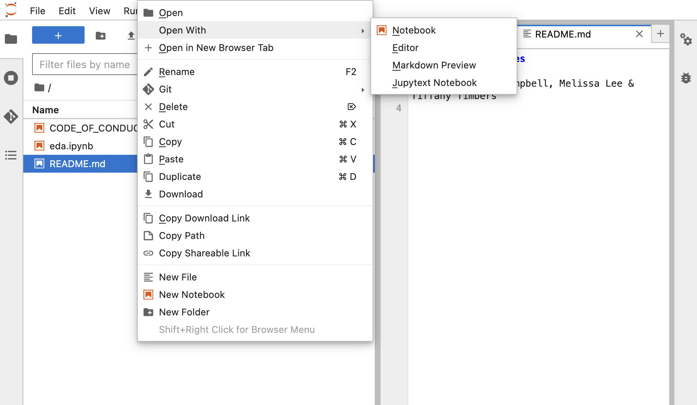
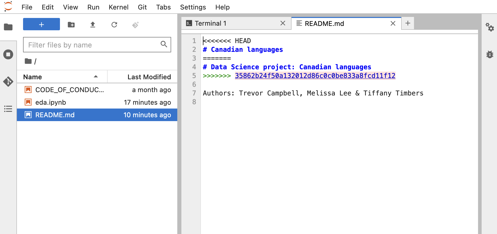
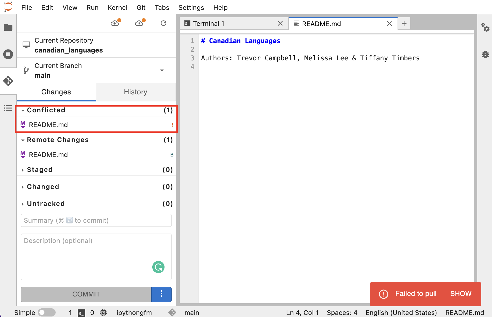
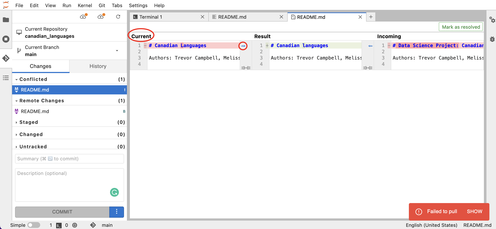
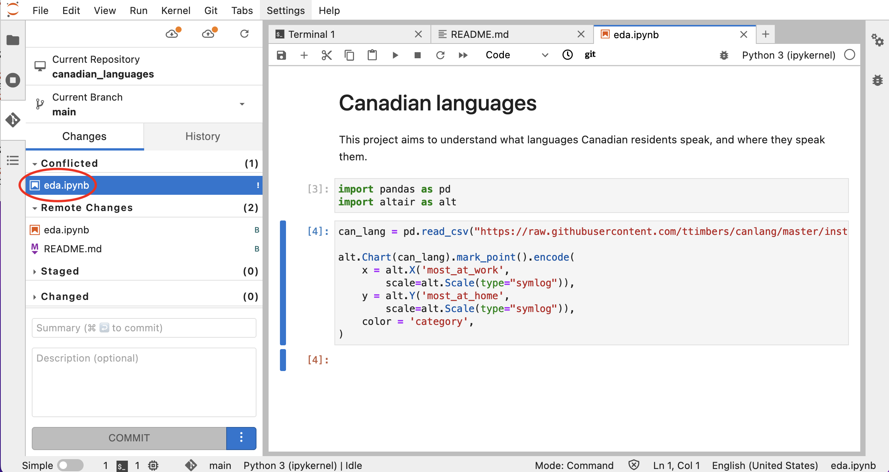
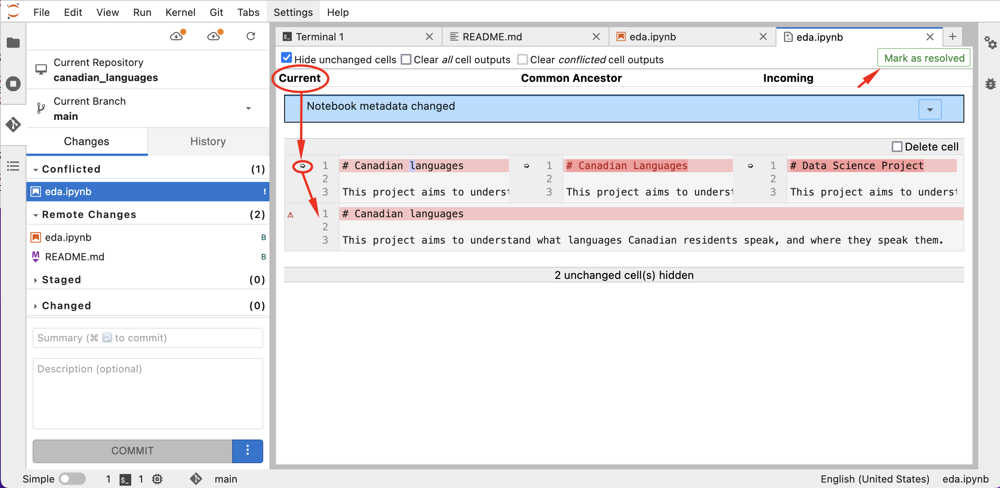

On branch main
Your branch and 'origin/main' have diverged,
and have 2 and 1 different commits each, respectively.
(use "git pull" to merge the remote branch into yours)
You have unmerged paths.
(fix conflicts and run "git commit")
(use "git merge --abort" to abort the merge)
Unmerged paths:
(use "git add <file>..." to mark resolution)
both modified: README.md
no changes added to commit (use "git add" and/or "git commit -a")
Handling merge conflicts: Terminal

Handling merge conflicts: Terminal

Handling merge conflicts: JupyterLab

Handling merge conflicts: JupyterLab

Special case: Version control and Jupyter Notebooks
JSON format
{
"cells": [
{
"cell_type": "markdown",
"metadata": {},
"source": [
"# Canadian Languages\n",
"\n",
"This project aims to understand what languages Canadian residents speak, and where they speak them."
]
},
{
"cell_type": "code",
"execution_count": 3,
"metadata": {},
"outputs": [],
"source": [
"import pandas as pd\n",
"import altair as alt"
]
},
Special case: Version control and Jupyter Notebooks

Special case: Version control and Jupyter Notebooks

Extra: Stashing local non-committed changes before pulling (Terminal)
error: Your local changes to the following files would be overwritten by merge:
README.md
Please commit your changes or stash them before you merge.
Aborting
Extra: Stashing local non-committed changes before pulling (Terminal)
git stash
Saved working directory and index state WIP on main: d59b6bb Add MIT license